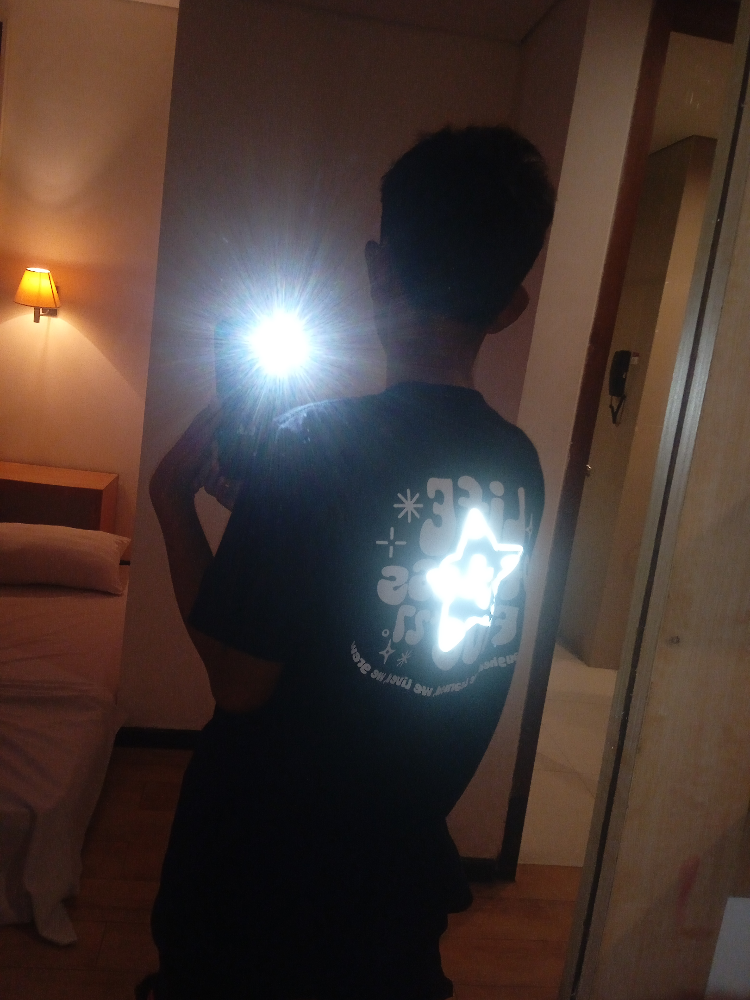
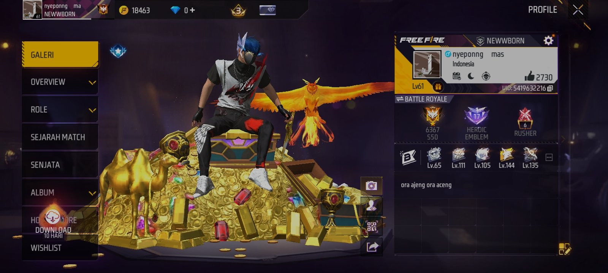
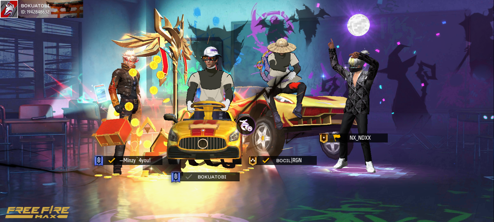
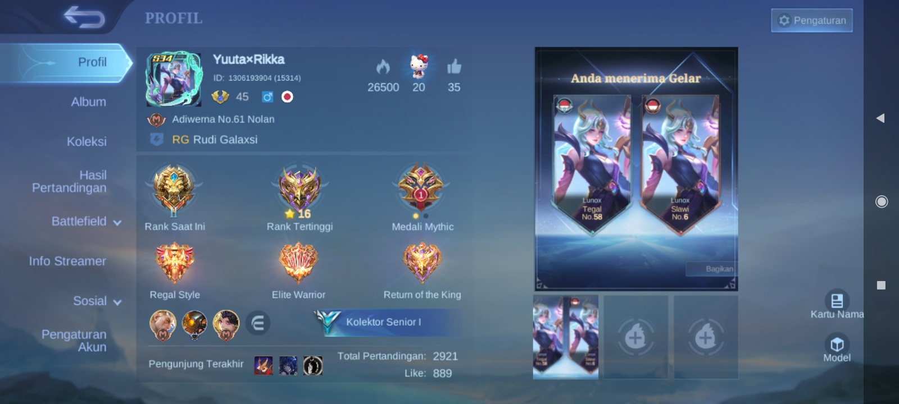
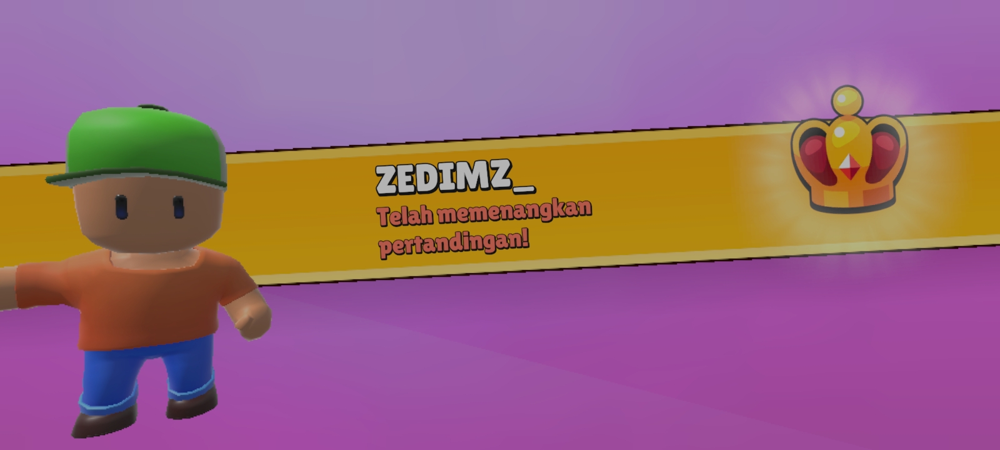

GAMES PERMAINAN
GALERI ALBUM




PROYEK SAYA
Berjalan di Termux V1.2. Fokus pada HTML, CSS, JS,PYTHON DLL SERTA MEMBANGUN KESUKSESAN
> HTML (HyperText Markup Language) adalah struktur inti website. Tanpa ini, tidak ada web iniHTML bukan sekadar bahasa pemograman, melainkan pondasi dari seluruh ekosistem web.
Semantic HTML Mastery: Penggunaan elemen seperti
> CSS (Cascading Style Sheets) memberikan tema hacker ungu ini. Desain futuristik CSS adalah bahasa yang memberikan identitas visual dan estetika pada sebuah proyek digital. Modern Layout Engine (Flexbox & Grid): Sistem pengaturan tata letak dua dimensi yang memungkinkan elemen web bisa beradaptasi secara otomatis (responsive) di berbagai ukuran layar, mulai dari Redmi 9C lu sampai monitor PC 4K. Complex Animations & Transitions: Penggunaan @keyframes untuk menciptakan gerakan halus, seperti efek teks berjalan (marquee) dan transisi warna neon yang memberikan kesan futuristik. Variable Design (CSS Root): Teknik penggunaan variabel (--color-main) untuk menyimpan kode warna, sehingga jika lu mau ganti tema dari ungu ke hijau, lu cuma butuh ganti satu baris kode saja. Box Model & Shadows: Pengaturan Margin, Padding, dan Border yang dikombinasikan dengan box-shadow untuk menciptakan efek kedalaman (3D) dan cahaya (glow) ala hacker.
> JavaScript memberikan interaksi. Menjalankan skrip dashboard JavaScript adalah otak yang mengatur interaksi, logika, dan kecerdasan buatan sederhana di dalam sebuah website. DOM (Document Object Model) Control: Teknik memanipulasi elemen HTML secara real-time. Contohnya: mengganti teks "Loading" menjadi "Access Granted" tanpa harus memuat ulang (refresh) halaman. Event-Driven Programming: Menghubungkan tindakan user (seperti klik, scroll, atau ketik) dengan fungsi tertentu di dalam script untuk menciptakan pengalaman yang interaktif. Asynchronous Process: Dasar untuk melakukan tugas di latar belakang, seperti mengambil data dari server atau menjalankan timer untuk game yang sedang lu kembangkan. Logic & Algorithm: Penerapan logika matematika dan kondisi (if/else, loops) untuk membangun sistem fungsional seperti kalkulator skor di game atau sistem keamanan sederhana.
FAVORIT (FOOD & DRINK)

Ayam Geprek (Boster)
Favorit saat koding malam. Gurih pedas.

Nasi Goreng Spesial
Nasi goreng adalah solusi paling cepat dan enak saat lapar melanda di tengah sesi koding malam.

Kopi (Fokus)
Menjaga fokus saat eksplorasi teknologi.

Es Teh Manis
Menyegarkan setelah mabar atau koding.
Perjalanan saya dimulai dari sebuah layar kecil Redmi 9C. Bagi orang lain, terminal Termux hanyalah barisan teks hijau yang membosankan, tapi bagi saya, itu adalah gerbang menuju dunia tanpa batas. Saya adalah seorang pelajar yang percaya bahwa keamanan siber bukan tentang merusak, tapi tentang melindungi dan memahami bagaimana dunia digital bekerja. Di balik kodingan GHOST-DESTRO, ada ambisi besar untuk terus belajar, meskipun saat ini hobi saya mungkin terlihat sederhana di mata orang lain
KEAHLIAN
PENGALAMAN
2026 - SEKARANG
Fokus Pengembangan Web & Cyber Security & Hacking (pelajar ).
2022
mengenal apa itu hacker
2023-2025
belajar otodidak membuat tools dengan bantuan platform digital
@KONTAK
DESTRO-AI
> ENCRYPTED CONNECTION VIA SERVER